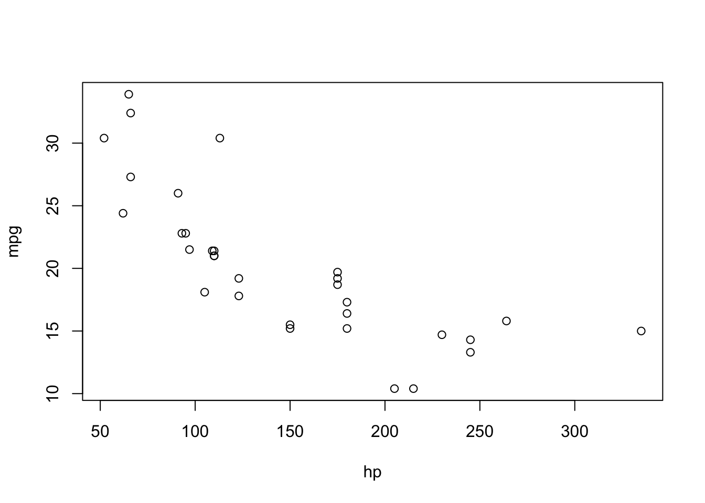
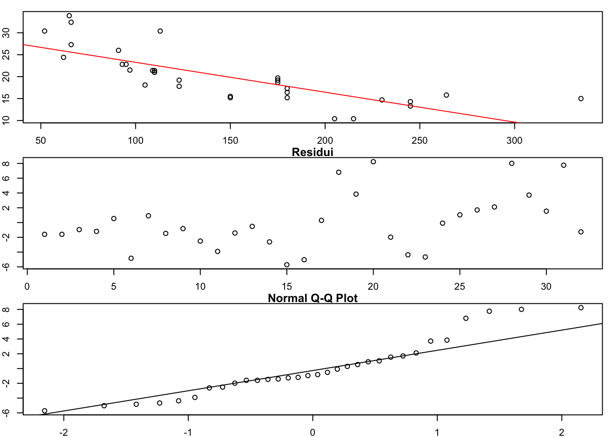

Chapter 6 Regressione
Originally posted here.
Il contenuto di questo capitolo si basa sull’omonimo capitolo del libro Calcolo delle probabilità e statistica di Paolo Baldi (Baldi 1998).
Si consideri il problema, piuttosto comune, di voler esprimere una variabile, ad esempio \(y\), in funzione di altre variabili, ad esempio \(x_1, \dots , x_n\), più delle perturbazioni aleatorie.
6.1 Regressione lineare
Prendiamo in considerazione il caso in cui tale funzione sia lineare. Parleremo di regressione lineare. Ciò significa che assumiamo che la variabile \(y\), detta dipendente, si possa esprimere come \[ y = \beta_0 + \beta_1 \cdot x + \omega \] dove \(\beta_0, \beta_1\) sono parametri da determinare e \(\omega\) è una perturbazione stocastica con distribuzione normale di media 0 e varianza \(\sigma^2\). I parametri \(\beta_0, \beta_1\) vengono solitamente determinati in base a diversi valori di \(x\) e \(y\).
Se abbiamo più osservazioni per la variabile \(y\), ottenute rispetto a diversi valori di \(x\), indicheremo con \(y_i\) e \(x_i\) tali valori.
Se l’assunzione che la dipendenza sia lineare è plausibile, ci aspettiamo che per le varie osservazioni valga: \[ y_i = \beta_0 + \beta_1 x_i + \omega_i, \quad i= 1, \dots , n \] con \(\omega_i\) indipendenti e tutti con distribuzione \(N(0,\sigma^2)\), con \(\sigma^2\) che non dipende da \(i\).
6.2 Stimare \(\beta_0\) e \(\beta_1\)
Il problema di stimare \(\beta_0, \beta_1\) viene risolto andando a trovare quei valori per i parametri che minimizzano la distanza tra i dati osservati (\(y_i\)) e i valori prodotti dal modello: \[ \hat{y_i} = \beta_0 + \beta_1 x_i \] La formulazione diviene quindi: \[ \min_{\beta_0, \beta_1 } S = S(\beta_0, \beta_1 ) = \sum_{i=1}^n \left( y_i - \beta_0 + \beta_1 x_i \right)^2 \]
Questo problema di minimizzazione quadratica ammette soluzione (unica) e si può ottenere andando ad imporre che il gradiente si annulli. Questo porta alla soluzione \((b_0, b_1)\) tale che: \[ b_0 = \bar{y} - b_1 \bar{x} \]
\[ b_1 = \frac{\sum_i (y_i - \bar{y}) x_i}{\sum_i x_i (x_i - \bar{x})} = \frac{\bar{\sigma} _{x y }} {\bar{\sigma_{x}^2}} \] con \[ \bar{x} = \frac{1}{n} \sum_i x_i \, \text{ e } \bar{y} = \frac{1}{n} \sum_i y_i \] I valori di \(b_0\) e \(b_1\) così ottenuti sono stimatori per i parametri \(\beta_0\) e \(\beta_1\). In particolare è possibile dimostrare che sono degli stimatori non distorti.
Inoltre c’è tutta una serie di risultati (che non dimostreremo) che permettono di provare, usando anche le ipotesi sugli \(\omega_i\), che: \[ b_0 \sim N\left( \beta_0, \sigma^2 (\frac{1}{n} + \frac{\bar{x}^2}{\bar{\sigma}_x^2}) \right), \, b_1 \sim N\left( \beta_1, \frac{\sigma^2}{\bar{\sigma}_x^2}) \right) \] Ovviamente è possibile associare degli intervalli di confidenza ai valori ottenuti, così come eseguire altri test statistici, ma noi non tratteremo questa parte.
Se indichiamo con \(r_i = y_i - \hat{y_i}\), i così detti residui, possiamo definire:
\[
s^2 = \frac{1}{n-2} \sum_i r_i^2
\]
che è uno stimatore non distorto di \(\sigma^2\), la varianza (sconosciuta) delle perturbazioni aleatorie. Inoltre vale che:
\[
\frac{s^2}{\sigma^2}(n-2) \sim \chi^2(n-2)
\]
dove \(\chi^2\) indica la distribuzione Chi quadrato.
Usando R con il comando lm() è possibile non solo definire un modello di regressione lineare, ma anche accedere a molte di queste informazioni.
6.3 Valutare il modello: \(R^2\)
Un utile valore per valutare la correttezza del modello, è il valore di \(R^2\), definito come: \[ R^2 = \frac{\sum_i (\hat{y_i} - \bar{y} )^2}{\sum_i (y_i - \bar{y})^2} = 1 -\frac{\sum_i (y_i - \hat{y_i})^2}{\sum_i (y_i - \bar{y})^2} \]
Questo valore, che assume valori tra 0 e 1, quantifica la proporzione di varianza dei dati che è spiegata dal modello. Più tale valore si avvicina a 1, migliore è il modello. Se invece tale valore è piccolo, o il modello è inadeguato (relazione non lineare o ipotesi non soddisfatte), o \(\sigma^2\) potrebbe avere un valore elevato.
6.4 Regressione lineare in R
Ricordiamo che per applicare la regressione lineare dobbiamo essere sicuri che le ipotesi siano soddisfatte. In particolare dovremo assicurarci che i residui seguano una distribuzione normale centrata in 0 e siano indipendenti.
Alcune delle funzioni già viste possono aiutarci in questo compito.
Definire e richiamare un modello lineare in R è molto semplice. Basta infatti utilizzare la funzione lm(), dove va specificata la variabile dipendente e il predittore ed i dati da usare per definire il modello.
Sebbene i modelli di regressione multipla siano concettualmente e praticamente più complessi, R li supporta usando la stessa funzione e la stessa notazione. In tal caso, invece che indicare un predittore, se ne indicano più usando il simbolo + per elencarli.
6.4.1 Mtcars
Vediamo alcuni esempi usando il dataset mtcars.
Supponiamo di voler investigare se il consumo di carburante e il numero di cavalli seguono una relazione lineare.
Un ottimo metodo per intuire se la relazione possa essere in qualche modo lineare è quello di disegnare la variabile dipendente in funzione del predittore.
plot(mpg ~ hp, data = mtcars)
Secondo i risultati della nostra analisi preliminare sembra plausibile che la relazione sia lineare. Continuiamo la nostra investigazione definendo il modello con la funzione lm() e visualizzando il risultato usando la ben nota funzione summary().
mtcars_reg <- lm(mpg ~ hp, data = mtcars)
summary(mtcars_reg)##
## Call:
## lm(formula = mpg ~ hp, data = mtcars)
##
## Residuals:
## Min 1Q Median 3Q Max
## -5.7121 -2.1122 -0.8854 1.5819 8.2360
##
## Coefficients:
## Estimate Std. Error t value Pr(>|t|)
## (Intercept) 30.09886 1.63392 18.421 < 2e-16 ***
## hp -0.06823 0.01012 -6.742 1.79e-07 ***
## ---
## Signif. codes: 0 '***' 0.001 '**' 0.01 '*' 0.05 '.' 0.1 ' ' 1
##
## Residual standard error: 3.863 on 30 degrees of freedom
## Multiple R-squared: 0.6024, Adjusted R-squared: 0.5892
## F-statistic: 45.46 on 1 and 30 DF, p-value: 1.788e-07Si può accedere ai vari elementi elencati da summary() usando la notazione $.
Tra le informazioni che fornisce summary, è presente anche il valore R-squared (R quadro), che è la proporzione di varianza della variabile dipendente che viene spiegata dal predittore. Tale valore è compreso tra 0 e 1. Valori vicino a 1 indicano un buon modello, mentre valori bassi possono indicare o che il modello non spieghi completamente/correttamente i dati, o che la varianza dei residui è molto alta.
Una volta definito il modello, è importante visualizzare i risultati per valutarne la bontà e per capire il comportamento dei residui. In questo modo è infatti possibile verificare quantitativamente (non formalmente) se i residui soddisfano le ipotesi di indipendenza (non si devono osservare dei pattern) e che la distribuzione dei quantili sia confrontabile con quella di una normale.
I seguenti comandi permettono di visualizzare la retta di regressione, i quantili e di confrontarli con la distribuzione in quantili di una normale.
par(mfrow = c(3,1), mar = c(2,2,1,1))
# Retta di regressione
plot(mpg ~ hp, data = mtcars)
abline(mtcars_reg$coefficients, col = "red")
# Pattern nei residui
plot(mtcars_reg$residuals, main = "Residui")
# Distribuzione in quantili
qqnorm(mtcars_reg$residuals)
qqline(mtcars_reg$residuals)
Esercizio A
In modo analogo a quanto fato sopra, si investighi la relazione tra consumo e peso delle auto in esame.
Esercizio B
Si discuta un modello lineare per le variabili x e y di Esercizo 1.
6.5 Regressione multipla
Come anticipato, se volessimo considerare una regressione multipla, e per esempio considerare come predittori sia la potenza (cavalli) che il peso, possiamo implementare il modello in modo simile in R.
mtcars_reg_hp_wt <- lm(mpg ~ hp + wt, data = mtcars)
summary(mtcars_reg_hp_wt)##
## Call:
## lm(formula = mpg ~ hp + wt, data = mtcars)
##
## Residuals:
## Min 1Q Median 3Q Max
## -3.941 -1.600 -0.182 1.050 5.854
##
## Coefficients:
## Estimate Std. Error t value Pr(>|t|)
## (Intercept) 37.22727 1.59879 23.285 < 2e-16 ***
## hp -0.03177 0.00903 -3.519 0.00145 **
## wt -3.87783 0.63273 -6.129 1.12e-06 ***
## ---
## Signif. codes: 0 '***' 0.001 '**' 0.01 '*' 0.05 '.' 0.1 ' ' 1
##
## Residual standard error: 2.593 on 29 degrees of freedom
## Multiple R-squared: 0.8268, Adjusted R-squared: 0.8148
## F-statistic: 69.21 on 2 and 29 DF, p-value: 9.109e-12References
Baldi, Paolo. 1998. Calcolo Delle Probabilià E Statistica. 2nd ed. McGraw-Hill Education.